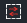

Consultar la información de alerta
La lista de información de alarma sin procesar muestra la información de la alarma de servicio en orden de tiempo. La última
alarma de servicio se muestra en la parte superior de la lista, y el usuario puede seleccionar la información de la alarma
según el tiempo. También pueda consultar y seleccionar información de alerta que se procesará según el número de placa o tipo
de alerta.
|
1. |
En el cuadro de consulta que está arriba de la lista de información de alerta en la principal de la alerta del vehículo, ingrese
la palabra clave “Placa” y seleccione el tipo de alerta. Puede usar consultas difusas para “Placa”.
|
|
2. |
Haga clic en 〖 〗, la información del vehículo de alarma que cumple con las condiciones de consulta se mostrará en la lista. 〗, la información del vehículo de alarma que cumple con las condiciones de consulta se mostrará en la lista. |
|
3. |
Seleccione y haga clic en la información de alarma de vehículo que desea consultar. El área GIS muestra el ícono del vehículo seleccionado y se centra automáticamente. La ubicación del icono es la ubicación
de la hora más reciente del vehículo.
|
• |
Un signo de exclamación amarillo en el icono de posicionamiento del vehículo indica que el vehículo tiene una alerta por procesar |
|
• |
En la lista de información de alerta, el tipo de alerta se indica mediante un icono:
|
– |
Indica una alerta de exceso de velocidad; |
|
– |
Indica la ruta de entrada y salida; |
|
– |
 Indica entrada y salida de valla electrónica; |
|
– |
Indica desviación de ruta. |
|
|